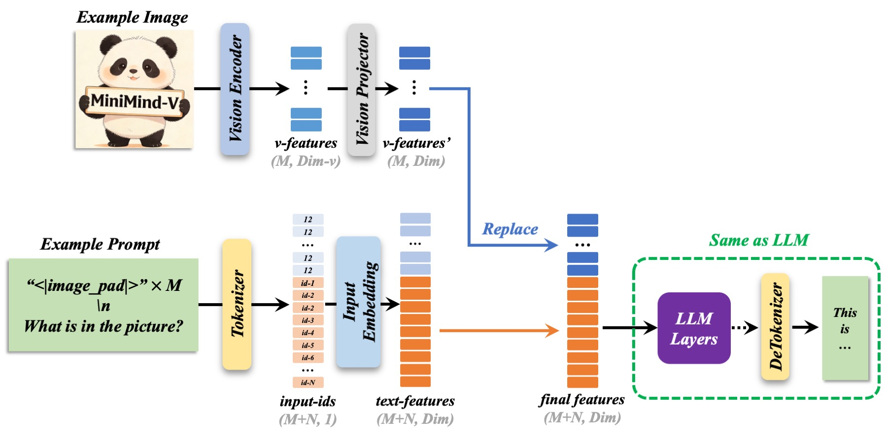

1. LLM 本质上在预测 token
语言模型看到的是 token 序列，不是自然语言本身。文本会先被 tokenizer 切成 token id，再查 embedding 表得到向量，送入 Transformer。训练时，模型学习在当前位置预测下一个 token；推理时，模型把刚生成的 token 接回输入，继续预测后面的 token。
这个视角很重要：如果图片、声音或动作也能被转换成一串向量，并且这些向量落在语言模型能够融合的空间里，它们就可以参与同一个“预测下一个 token”的流程。
2. VLM 的最小配方
MiniMind-V 采用非常克制的实现：视觉编码器全程冻结，核心可训练模块是 vision_proj，SFT 阶段再解冻 LLM 首尾层，让视觉 token 进入模型后能被吸收，同时尽量保留中间层的语言能力。
3. 为什么是 64 个视觉 token
当前项目使用 siglip2-base-p32-256-ve 作为视觉编码器。输入图像按 256×256 处理，patch size 为 32，因此会形成 8×8 共 64 个 patch token。每个 token 的视觉隐藏维度是 768，随后进入 MMVisionProjector。

文本 prompt 中的 <image> 会被展开成 64 个 <|image_pad|>，模型再把这些位置的 embedding 替换为视觉特征。
4. 术语速查
| 术语 | 在 MiniMind-V 里的含义 | 对应位置 |
|---|---|---|
| Tokenizer | 把聊天文本、特殊 token 和回答模板转换成 token id。 | model/tokenizer.json |
| Embedding | token id 对应的向量表示，视觉 token 最终也要进入这个空间。 | model.model.embed_tokens |
| Visual Encoder | 冻结的 SigLIP2 视觉模型，负责从图片提取 patch 特征。 | MiniMindVLM.get_vision_model |
| Projector | LayerNorm + Linear + GELU + Linear，把视觉特征对齐到 LLM hidden size。 | MMVisionProjector |
| SFT | 监督微调，让模型按指令围绕图片回答问题。 | trainer/train_sft_vlm.py |
| MoE | Mixture of Experts，每个 token 只激活部分专家，区分总参数与激活参数。 | use_moe=1 |
-100 label | 交叉熵忽略的标签值，用来只训练 assistant 回复部分。 | VLMDataset.generate_labels |
5. 需要补齐的基础
机器学习与 PyTorch
张量维度、反向传播、optimizer、loss、mixed precision、DataLoader、DDP 是训练脚本里最常出现的概念。
Transformers 生态
AutoTokenizer、AutoModelForCausalLM、save_pretrained 和 trust_remote_code 影响推理、格式转换和 WebUI。
视觉模型
ViT 把图片切成 patch，SigLIP 系列通过图文对比学习获得图像语义特征，MiniMind-V 使用它的 encoder 输出。
数据工程
项目数据用 parquet 存 conversations 和 image_bytes，避免大量零碎图片文件导致读取和解压缓慢。